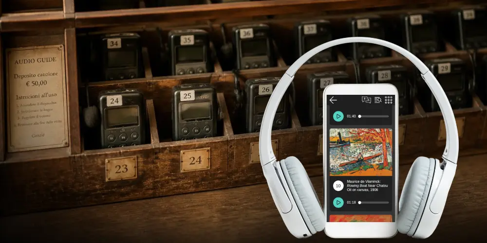

Rosa Sala
Revenue share for audio guides: an old model, back for the smartphone era

Revenue share used to be one of the most lucrative parts of running an audio guide program, back when museums leased physical devices from a handful of large providers and split the proceeds. What made that model work was never the device itself. It was controlled access: a rented device could only ever reach one paying visitor at a time. Smartphones broke that constraint, not the revenue. A QR code or a downloadable link can be copied indefinitely, so the one-to-one link between a unit of access and a paying visitor disappeared, and audio guides became far easier to distribute and far harder to sell. Nubart GUIDE restores that link digitally: a patented mechanism makes a QR code non-transferable again, with every activation logged and verifiable, without asking visitors to download anything or pay twice. What follows is a look at how revenue share actually worked in the device era, why every attempt to digitize it has struggled, and how controlled digital access makes the old economics viable again.
The device era: how revenue share worked
Those of us who have been in the audio guide market long enough, like Nubart, still remember the tail end of the golden era, before smartphones, when audio guides were sophisticated and costly dedicated devices and the market was dominated by a handful of multinational providers with real negotiating power. That old model still exists today, but the rise of bring-your-own-device has steadily shrunk it and added new formats to the mix: first native apps, then, around 2016, PWA or web-app audio guides accessed by QR code.
In those years, audio guides were a meaningful income source for both providers and museums, mostly thanks to the traditional revenue share model. After a public tender, the museum would grant a concession, typically for four or five years, to a provider and hand over a few square meters of reception space. The provider produced the content (with museum oversight), installed a counter, stocked it with devices, hired a couple of people, usually students, to hand them out and collect them, and paid the museum a share of the resulting profit. The museum didn't have to manage any of it.
One of the giants of that era, roughly the 1990s through the 2000s, was Antenna International, the company behind the well-known Alcatraz audio guide. It went bankrupt a few years later, one of several device-era giants that couldn't survive the shift to digital. Sharing real figures from a revenue share agreement at a Catalan museum from about ten years ago doesn't give away any secrets at this point:
| Investment by Antenna (content production, devices) | ca. €39,500 |
|---|---|
| Visitor price | €5 |
| Visitors/year | 800,000 |
| Take-up rate | 5% (40,000 activations) |
| Total revenue | €200,000 |
| Museum's share (50%) | €100,000 |
| Antenna's share (50%) | €100,000 |
| Antenna's annual staff cost | ca. €36,000 |
| Antenna's net revenue/year | €64,000 |
| Museum's net revenue/year | €100,000 |
€100,000 a year in exchange for temporarily giving up a few square meters of space looks like an excellent deal for the museum. It was a smaller but still attractive sum for Antenna too, once installation and content costs were amortized over the life of the contract.
This model is still alive in large museums today. One of its weak points has always been compliance: how much real visibility the museum has into how many devices were actually rented, and how cleanly that revenue gets tracked once it changes hands. When the accounting isn't crystal clear, a dispute over the numbers can escalate a long way, even when nobody involved acted in bad faith. The Alhambra's audio-guide concession is the case that made this most visible: a dispute over the contract's accounting led to a criminal investigation and trial that took about eight years to reach a first verdict, a full acquittal for everyone involved, in early 2023. The regional government has since appealed that acquittal, so the case isn't formally closed even now. Whatever the final outcome, that's the better part of a decade spent establishing something a transparent, real-time activation record would have settled from day one. The lesson for anyone running a revenue-share program isn't about guilt. It's that an accountability gap in how usage gets counted puts everyone downstream at risk, including people who end up having to prove they did nothing wrong.
But visitors had grown used to paying for an audio guide. So even in smaller museums, device rentals could be a meaningful revenue source, though often at a real logistical cost, since smaller institutions had to handle distribution, cleaning, charging and collection with their own staff.
The digitization of audio guides
With smartphones, this profitable model became mostly the preserve of large museums still committed to dedicated devices, which today are frequently just Android phones running in kiosk mode, locked to the guide app and packaged in a rugged, easy-to-clean case.
Most mid-sized museums, with less negotiating leverage, moved to digital systems instead. Through the 2010s that usually meant a native app, but a persistently low adoption rate pushed the 2020s, especially after the pandemic got everyone used to scanning QR codes, toward web-app or PWA guides: nearly all the capability of a native app, opened directly in any browser, no app store required.
Bringing audio guides into the digital world came at a cost, though. Whether native app or PWA, what used to be a source of income turned into a line item of expense.
Can revenue share survive the move to digital?
Attempts to generate revenue from digital audio guides have mostly fallen flat. Native apps can charge for downloads, but it quickly became clear that almost no visitor is willing to pay for an audio guide app before even trying it, so making them free, just to nudge adoption a little higher, became the only realistic option.
QR-based guides face a different problem. A QR code is, by default, just a link, easy to share, and a link with no restriction on who can use it has no commercial value on its own. Some providers have tried porting the in-app payment model common in native apps, particularly gaming apps, over to QR guides: the visitor scans the code, perhaps hears a track or two as a teaser, then hits a paywall to unlock the rest.
The problem with paying after you've already arrived
On paper, charging inside the app after the QR scan looks like a natural way to bring the old revenue-share economics into the smartphone era. In practice, it runs against how people actually behave.
In our experience, payment integrates far more easily at a point where the visitor is already making a purchase: the ticket desk, bundled with admission, or online booking, where paying for the visit is already the task at hand and an optional extra fits naturally into that same checkout. A charge introduced after entry, once the visitor has already paid for admission and just wants to start the guide, adds a new decision and a new transaction step at a moment nothing else calls for one. It also tends to mean a second card-payment step routed through its own processor, so the transaction that didn't need to be split gets split anyway.
How Nubart brought the old model back
Nubart's answer wasn't to bolt a paywall onto a generic link. It was to change what a QR code can be.
The LWAC patent binds a QR code to whoever activates it first. It stays usable by that person indefinitely, with no time limit, no app, no login and no personal registration, but it becomes worthless if forwarded to anyone else. For physical cards, that binding happens at the card; for codes delivered through online ticketing, it happens at the link. That single property turns a QR code from a shareable freebie into something with real commercial value.
Patented in the EU, Spain and the USA — granted
The second half of the mechanism solves the old model's actual weak point. Every activation is logged and visible to the museum in real time, through a portal the museum can check whenever it wants. There's no equivalent of the old device-rental trust problem, no need to take a provider's word for how many units went out the door.
In practice, this takes two forms: branded cards sold at reception together with admission, or the same non-transferable codes delivered as links during online booking. Both routes put the payment exactly where it needs to be, inside a transaction the visitor is already committed to, not after. Both also give the museum the same auditable, per-activation record that solved for accountability what the old rental-desk model could only ever take on trust.
The physical version does something a link alone can't: it gives visitors something to hold. A printed, branded card reads as a keepsake rather than a fee for a phone link, part of why it's Nubart's most common format, and why some museums go further and sell the guide itself as a postcard in the shop. That tactile quality reinforces the same psychology as the timing: people are buying an object at a moment they're already paying for something, not authorizing a charge on their own phone. It also keeps working after the visit. Because the card stays valid for its holder indefinitely, 6.84% of Nubart's card users return to the guide from home at least twelve hours after leaving, a form of ongoing engagement no rented device or single app session can produce.
The printed format opens a funding channel a digital-only version can't, too: some museums add a sponsor's logo to the card as part of their own funding arrangement, something considerably harder to pull off on a native app or a rented device. Nubart has no role in that arrangement beyond accommodating the design on request, but it's a real advantage of the physical format worth noting.
Percentage revenue share versus per-activation pricing
Broadly, a museum can pay for a digital guide in one of three ways: a flat subscription regardless of usage, a percentage cut of whatever the visitor pays, or a fixed amount per activated access credential. The case against the second option doesn't need a study to make: a percentage of a growing number keeps growing by definition. That favors the vendor at low volume, when a fixed fee would feel disproportionate to the little revenue actually flowing, and works against the museum as volume climbs, since the vendor's cut then grows in step with success it did nothing extra to earn. A flat number, by contrast, never moves either way.
Nubart's revenue share agreements are structured differently: not as a percentage of what the museum charges the visitor, but as a fixed amount the museum pays per activated access credential, agreed with the museum in advance. The museum keeps whatever margin it builds into its own visitor price. Nubart is paid only when a card or code is actually activated, never when it isn't. That's closer in spirit to the original device-era concessions, themselves negotiated per-unit contracts, than it is to a percentage cut of revenue.
It isn't price-indifferent, though. Because our revenue depends on activations rather than on the museum's price, we have a direct stake in the museum landing on a visitor price that maximizes take-up, not one that simply looks good on a single sale. Price and take-up don't move independently: across Nubart installations, take-up holds up well between €1 and €3 and drops noticeably at €5, so a museum selling many cards at €3 can out-earn one selling far fewer at €5, and Nubart's own return moves with that same curve. In practice this means helping museums find that price using our own data, and where a museum insists on pricing well above what the data supports, negotiating a different per-activation fee to reflect the lower volume we'd expect, or declining the contract. Both sides carry real exposure in getting the number right, a different incentive from either a flat fee, paid the same whether the guide is used or ignored, or a straight percentage cut, which pays the vendor more for the same work purely because the museum charges more.
| Model | Visitor pays | Provider is paid | If nobody uses it | Provider's stake in visitor price |
|---|---|---|---|---|
| Flat subscription | optional | fixed fee | yes | none |
| Percentage revenue share | yes | % of visitor revenue | no | direct: earns more per sale as price rises |
| Per-activation (Nubart) | optional or bundled | fixed amount per activation | no | indirect: revenue depends on take-up, so price is negotiated jointly |
It also closes the loop back to the one thing the old device-rental model could never fully deliver: auditability. LWAC controls who can access the guide; the activation record controls whether anyone can dispute how many people did. Every activation is timestamped and visible to the museum through its own dashboard, in real time, rather than reported after the fact by the party being paid to report it honestly.
See it for your museum — request a quote, or order a free sample card to try the experience yourself.
We hope you found this article useful. Subscribe to our newsletter so you don't miss any of our posts.
You may also be interested in

How museums monetise a QR-code audio guide
A QR code can be shared endlessly, so a public link cannot be sold. How Nubart's patented LWAC makes a card non-transferable — with real take-up data and a break-even calculator.

Turn your audio tour into postcards for the museum shop
A non-transferable QR card doubles as a souvenir. How museums sell the audio guide as a postcard visitors take home.